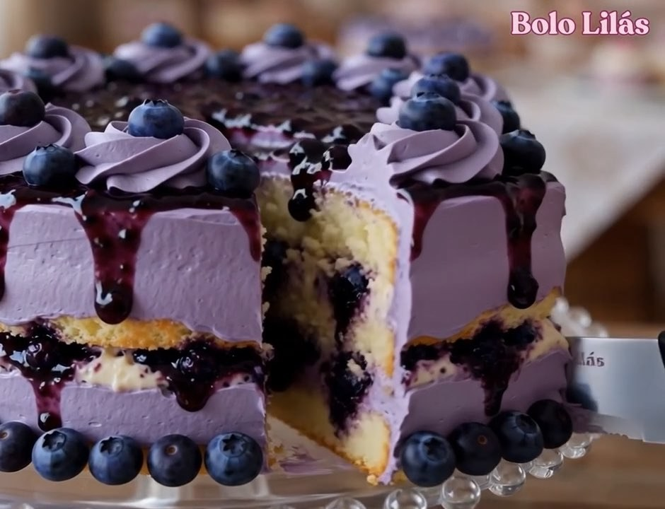

Bolo lilás de blueberry com trufa de chocolate branco
Bolo lilás de blueberry: massa de baunilha fofinha, recheio trufado de chocolate branco, geleia de mirtilo caseira e cobertura de chantilly lilás marmorizado.

12 fatias · forma redonda de 20 cm · toque para marcar o que já separou
Este bolo é de encher os olhos: a cobertura lilás marmorizada é feita misturando a geleia de mirtilo ao chantilly, sem corante. Por dentro, massa de baunilha fofinha, recheio trufado de chocolate branco e geleia caseira de blueberry, com frutinhas inteiras. É perfeito para aniversários e datas especiais, e fica ainda melhor depois de 4 horas de geladeira.
Modo de preparo- Massa: bata os ovos com o açúcar até triplicar de volume. Incorpore delicadamente os demais ingredientes, deixando o fermento por último.
- Asse em forma de 20 cm a 180 °C por 35 a 40 minutos. Deixe esfriar.
- Recheio trufado: derreta o chocolate branco com os 200 g de creme de leite. Deixe esfriar e incorpore o creme de leite fresco batido em chantilly.
- Geleia: cozinhe os mirtilos com o açúcar e o limão em fogo baixo até engrossar, preservando algumas frutas inteiras. Deixe esfriar.
- Cobertura: bata o chantilly e incorpore delicadamente 3 colheres da geleia fria, criando o efeito lilás marmorizado.
- Montagem: corte a massa em camadas e intercale com a trufa e a geleia.
- Cubra com o chantilly lilás, decore com mirtilos frescos e leve à geladeira por pelo menos 4 horas.

Boleira de vidro com borda de bolinhas
A boleira com pé que deixa bolos e docinhos com cara de confeitaria. Linda para festas, mesa de Natal e fotos de receitas.
Ver na AmazonLink de afiliado. Como Associada Amazon, ganho com compras qualificadas.
Publicada em 25 de novembro de 2026 · Tempo total: 1 h 30 min · Imagem ilustrativa criada com IA.
Conta pra gente como ficou! Deixe um comentário, mande uma foto do seu resultado ou marque @melhores.receitas126 no seu post.